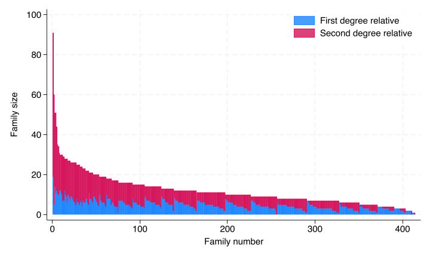

run sub/load_data.docollapse (mean) relatives (sum) invite ,by(access_code) sort invitetab invite* Note that 275 families, or 67% had no testingquisum invitedi"Total number of invited relatives = "r(sum)scalar total_invited = r(N)quicountif invite==0scalar none_invited=r(N)
About one third of families invited no relatives (134/414= 0.32 )
7.3 Number of relatives tested
code
run sub/load_data.docollapse (mean) relatives (sum) test ,by(access_code) sorttestlabelvartest"Tested"tabletest* Note that 275 families, or 67% had no testingquisumtestdi"Total number of tested relatives = "r(sum)scalar total_tested = r(N)quicountiftest==0scalar none_tested=r(N)
| Frequency
--------+-----------
Tested |
0 | 279
1 | 66
2 | 32
3 | 22
4 | 5
5 | 6
6 | 3
8 | 1
Total | 414
--------------------
Total number of tested relatives = 272
We see the data is very lopsided as two-thirds of families had no relatives tested (279/414 = `r round(279/414,2)).
Relative | Summary of (count) id
Degree | Mean Std. dev. Freq.
------------+------------------------------------
1st degre | 4.7542579 2.3644625 411
2nd degre | 7.7113402 6.8746003 388
------------+------------------------------------
Total | 6.1902378 5.2894992 799
id0: 3 missing values recoded
id1: 26 missing values recoded
file img/fam_size.png written in PNG format

Average number of relatives of each type
code
run sub/load_data.dogen degree2=reldegree-1 // added to create_vars-1bysort access_code: gen id=_n// added to create_vars-2collapse (count) id ,by(access_code degree2) tab degree2,sum(id)quisum iddi"Total number of eligible relatives is "r(sum)di"Standard deviation of number of relatives is "r(sd)
| Summary of (count) id
degree2 | Mean Std. dev. Freq.
------------+------------------------------------
0 | 4.7542579 2.3644625 411
1 | 7.7113402 6.8746003 388
------------+------------------------------------
Total | 6.1902378 5.2894992 799
Total number of eligible relatives is 4946
Standard deviation of number of relatives is 5.2894992
7.5 Empty model: Proportion of relatives invited and tested
code
run sub/load_data.dorun sub/create_vars.domelogit invite || access_code: , nologestat icclocal icc = r(icc2)margins etable ,margins cstat(_r_b, nformat(%4.2f)) /// cstat(_r_ci, cidelimiter(", ") nformat(%4.2f)) /// mstat(ICC=`icc') column(dvlabel)melogit test || access_code: , nologestat icclocal icc = r(icc2)margins qui etable ,margins cstat(_r_b, nformat(%4.2f)) /// cstat(_r_ci, cidelimiter(", ") nformat(%4.2f)) /// mstat(ICC=`icc') column(dvlabel) ///title("Table: Overall rates of invitation and testing ") ///notes("Estimates other than ICC are predicted probabilities (CI) averaged over the random effects") ///notes("The predicted probabilities are averaged over the testing conditions as well") ///append eqrecode(test = xb invite = xb) ///export(sub/table_means.html,replace)
Mixed-effects logistic regression Number of obs = 4,946
Group variable: access_code Number of groups = 414
Obs per group:
min = 1
avg = 11.9
max = 91
Integration method: mvaghermite Integration pts. = 7
Wald chi2(0) = .
Log likelihood = -2026.2707 Prob > chi2 = .
------------------------------------------------------------------------------
invite | Coefficient Std. err. z P>|z| [95% conf. interval]
-------------+----------------------------------------------------------------
_cons | -1.867445 .1086495 -17.19 0.000 -2.080394 -1.654496
-------------+----------------------------------------------------------------
access_code |
var(_cons)| 3.2369 .4067448 2.530279 4.140857
------------------------------------------------------------------------------
LR test vs. logistic model: chibar2(01) = 781.04 Prob >= chibar2 = 0.0000
Intraclass correlation
------------------------------------------------------------------------------
Level | ICC Std. err. [95% conf. interval]
-----------------------------+------------------------------------------------
access_code | .4959423 .0314126 .4347448 .5572615
------------------------------------------------------------------------------
warning: prediction constant over observations.
Predictive margins Number of obs = 4,946
Model VCE: OIM
Expression: Marginal predicted mean, predict()
------------------------------------------------------------------------------
| Delta-method
| Margin std. err. z P>|z| [95% conf. interval]
-------------+----------------------------------------------------------------
_cons | .2271242 .0128234 17.71 0.000 .2019908 .2522575
------------------------------------------------------------------------------
----------------------
Invited
----------------------
Intercept 0.23
[0.20, 0.25]
ICC 0.50
----------------------
Mixed-effects logistic regression Number of obs = 4,946
Group variable: access_code Number of groups = 414
Obs per group:
min = 1
avg = 11.9
max = 91
Integration method: mvaghermite Integration pts. = 7
Wald chi2(0) = .
Log likelihood = -960.66633 Prob > chi2 = .
------------------------------------------------------------------------------
test | Coefficient Std. err. z P>|z| [95% conf. interval]
-------------+----------------------------------------------------------------
_cons | -3.724292 .1689004 -22.05 0.000 -4.055331 -3.393254
-------------+----------------------------------------------------------------
access_code |
var(_cons)| 2.811635 .532245 1.940107 4.074667
------------------------------------------------------------------------------
LR test vs. logistic model: chibar2(01) = 185.32 Prob >= chibar2 = 0.0000
Intraclass correlation
------------------------------------------------------------------------------
Level | ICC Std. err. [95% conf. interval]
-----------------------------+------------------------------------------------
access_code | .4608102 .0470345 .3709591 .5532823
------------------------------------------------------------------------------
warning: prediction constant over observations.
Predictive margins Number of obs = 4,946
Model VCE: OIM
Expression: Marginal predicted mean, predict()
------------------------------------------------------------------------------
| Delta-method
| Margin std. err. z P>|z| [95% conf. interval]
-------------+----------------------------------------------------------------
_cons | .0637716 .006353 10.04 0.000 .0513199 .0762233
------------------------------------------------------------------------------
Table: Overall rates of invitation and testing
Invited
Tested
Intercept
0.23
0.06
[0.20, 0.25]
[0.05, 0.08]
ICC
0.50
0.46
Estimates other than ICC are predicted probabilities (CI) averaged over the random effects
The predicted probabilities are averaged over the testing conditions as well
7.5.1 Discussion of empty model
That’s a big ICC! almost half the variance is between families for both invitation to the website and testing